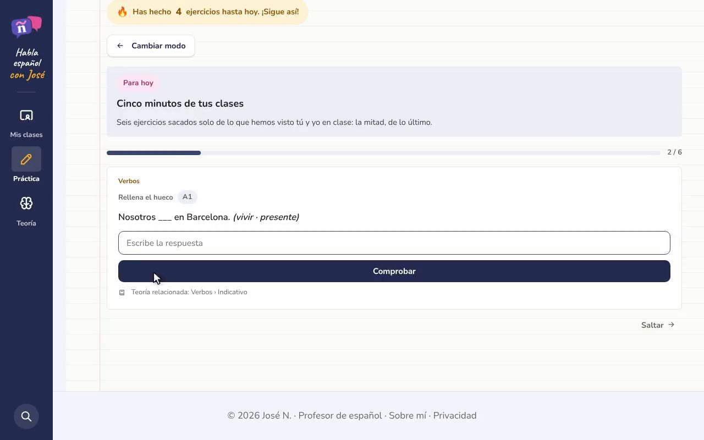
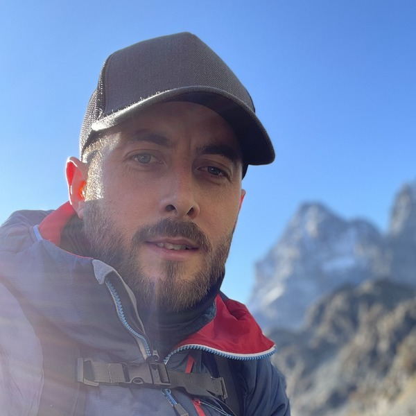

¡Hola!
Tus clases de español no se quedan en la videollamada.
Clases particulares a tu medida, y una web que sale de cada una de ellas.
Así es por dentro, con una alumna inventada.
Lo mejor de una plataforma online, con la conversación de un profesor nativo.

Una plataforma
Tus clases, ejercicios que se corrigen solos, lecturas y cursos, siempre a mano.
Un profesor nativo
Hablamos de verdad, resuelvo tus dudas y te enseño a hablar: nada de teoría aburrida.
¿Cómo funciona?
-
Reservas una clase.
Eliges día y hora en mi calendario.
-
Tu clase te espera en tu sección.
Preparada para ti, con su fecha y el botón para entrar.
-
Damos la clase.
Por videollamada, a tu medida.
- Hablamos
- Exploramos
- Comprendemos
- Resuelvo tus dudas
- Practicas en vivo
-
Tomas tus notas.
Junto a cada clase, para cuando las necesites.
-
Luego, ejercicios y una lectura.
Te los añado para asimilar lo que hemos visto. Y si quieres, cada clase tiene sus deberes.
-
Repasas en cinco minutos.
Solo de lo que hemos visto tú y yo.
-
Y practicas cuando quieras.
Por tu cuenta, a tu ritmo.
- Cursos paso a paso
- Por nivel
- Por tema
-
Si dudas, la teoría.
Para consultar, no para memorizar.
-
¿Y lo siguiente? Otra clase.
Aparece en tu sección, y sigue tu camino para hablar español con seguridad.
Pruébalo tú, sin registrarte.
Si tuviera dinero… · B1–B2Una clase entera, tal cual la ve un alumno: la explicación, los ejercicios y la lectura «El décimo».

Lo que dicen mis alumnos

Soy José, profesor de español para alumnos de todo el mundo. Sobre mí →
Aprendiendo con José, mi español ha mejorado muchísimo. Quería crecer profesionalmente y poder comunicarme con mi familia y mis amigos que solo hablaban español. En nuestras clases me ha preparado un plan de estudio profesional y a medida, que me ha ayudado muchísimo a hablar y a aprender la teoría. ¡Gracias, José!

Fue mi primera clase con José y estoy muy satisfecha. José explica con mucha claridad y está abierto a cualquier pregunta.
José sabe cómo adaptarse a tu nivel y prepara clases a medida.

Estoy estudiando español porque pronto me mudaré por trabajo. José ha creado un itinerario a medida, perfectamente adaptado a mis necesidades, sobre todo desde el punto de vista comercial. Estoy seguro de que, gracias a sus clases, mi nivel de español mejorará notablemente.
José es un profesor excelente, adapta cada clase a tu nivel actual de español, pero también te anima a seguir progresando constantemente.

¡Un profesor de español fantástico! Siempre preparado, con muy buen material para repasar en casa y ejercicios útiles. Adapta cada clase a mis necesidades y objetivos, y es muy flexible. Estoy aprendiendo y divirtiéndome a la vez. ¡Espero que él disfrute de nuestras clases tanto como yo! 😄
José es un profesor cercano, muy preparado y competente. Necesitaba retomar el estudio del español y me está ayudando a hacerlo de una forma realmente eficaz. Prepara las clases a medida de mis necesidades y me ayuda paso a paso. ¡Lo recomiendo muchísimo como profesor!
Todas mis reseñas están en mi perfil de Preply →
¿Empezamos?
Reserva tu primera clase y se abre todo: tus clases, todos los ejercicios y toda la teoría.
¿Ya eres alumno? Entra en tu cuaderno →